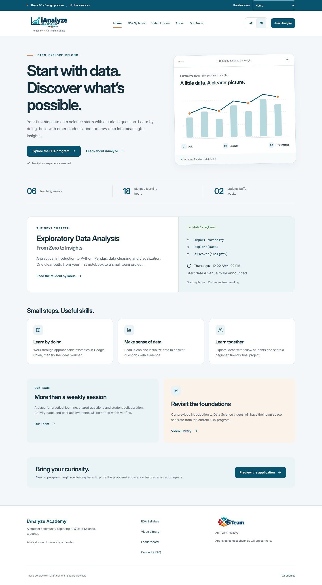
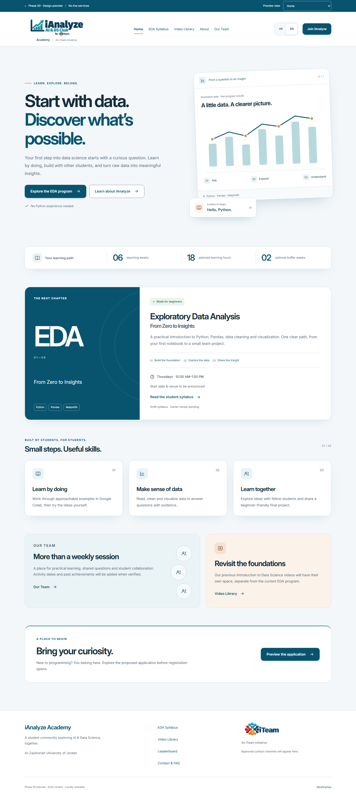

Phase 00 visual refinement. Compare all twelve views at the same language and viewport width. All dashboard records are synthetic.


Still captures use reduced motion to show stable final layouts. Open the interactive preview to inspect entrances, scroll reveals, progress animation and disclosure motion. Screenshots emulate browser viewport sizes; they are not real-device photographs. Extra captures include Arabic Home at 1440px, English Home at 390px, Arabic Syllabus at 768px, Arabic Activity at 320px, and Wireframes at 1440px in both the before/ and after/ folders.